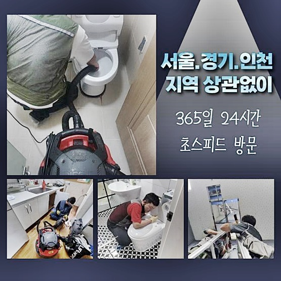
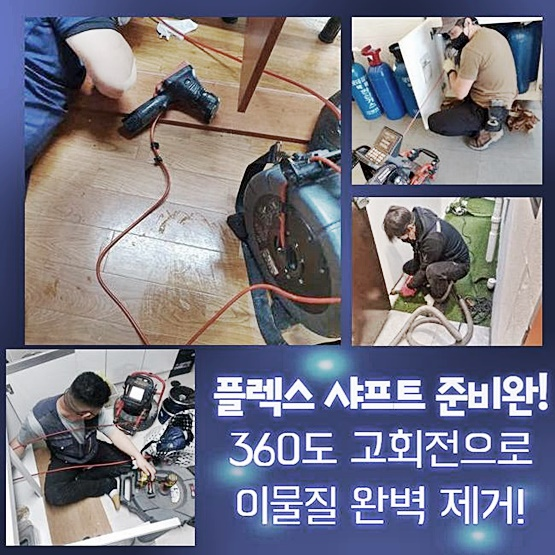
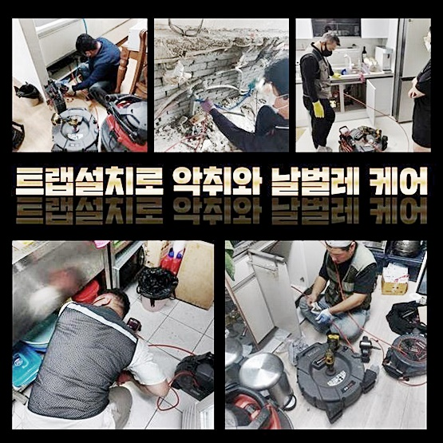
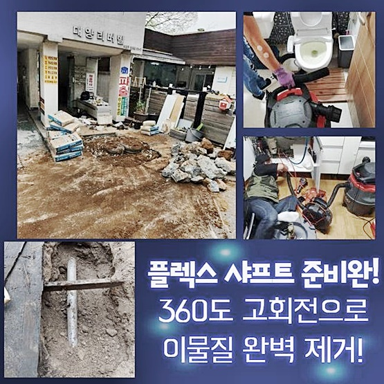
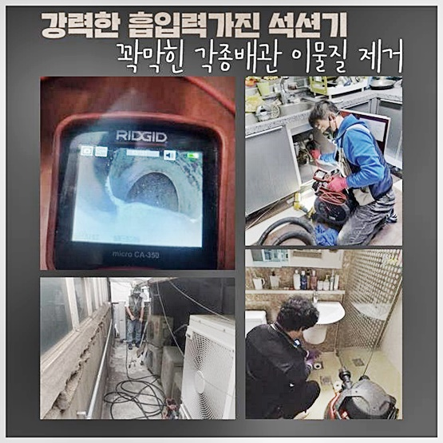
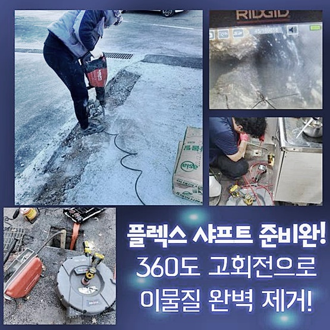

🏠 안양 달안동싱크대막힘 부림동 하수구청소장비 누수탐지
안양 싱크대막힘 전문 시공 후기

📋 작업 개요
- 위치: 안양
- 서비스 유형: 싱크대막힘, 변기막힘, 하수구막힘, 배관막힘, 누수수리, 뚫는업체, 배관청소, 고압세척
- 작업 일시: 2024. 6. 28. 20:05
- 업체명: 하수구수사대 (010-5615-2118)
🔍 문제 상황
안양 달안동싱크대막힘 부림동 하수구청소장비 누수탐지
하수관이 막히는문제는 번번히 발생하고있지만 처리하기어려운 문제중에 하나인데요
특별히 씽크대의경우 기름기있는 이물들이 하수구내부에 퇴적되어 빈번하게 발생된답니다
하수관이 막히게될때마다 전문기사들을 호출하기 번거롭다고 자가조치로 해결하고자 하시는분이 많습니다
잠깐의 효과를볼순있지만 확실하게 원인제거를 못했기에 옳다고 말씀드릴수없겠습니다
최근에다녀온 작업사례로 뚫는작업을 살펴보시면 도움이되실거에요
막힘증세가 발현되는 이유를우선 설명해볼텐데요
설거지를끝마치고 남아있는물과 기름기들이 정상적으로 빠지지못하고 정체되다가 굳게되어 발현되는일이 많아요
일반적으로 가정집에선 신속하게 해결하려고 높은온도의 물을흘리거나 주변마트에서 판매되는 약품으로 이용해봤지만 뚫리지가않고 도리어 물이솟구치는 현상까지 나타나기도해요
정상적으로 물이흘러가지 않으신다며 다급히 저희업체를 호출하셨는데요
현장으로 방문드린후 빠르게문제를 살폈는데요
하수구아래의 이어져있는 호스제거후 배관속에 석션장비를 집어넣어봤어요

🔎 원인 분석
💡 전문가 진단: 정밀 진단 장비를 사용하여 슬러지의 고착 여부를 판명하고 타격/세척 작업을 실시했습니다.
석션기는 쉽게말하면 가정내에있는 청소기같이 같은원리라고 보시면된답니다
강한힘을 이용해서 이물이나 오수를흡입하여 소거시키는 방법이에요
하수도가 주로막히는건 재차 말씀드리지만 이물로인해 막히게된답니다
그렇기때문에 흡입능력을 가지고있는 석션기를통해서 이물의상태를 체크해가면서 간단한막힘의 정도라면 흡입만을통해 처리하고있어요
오늘작업할 곳에서는 하수구내부에 오랜시간 쌓였기때문에 이물질들은 흡입되지않고 찌꺼기들만 흡입이되었어요
다음과정으로 내시경장비를 통하여 안쪽을 살피기로했죠
사람의 눈으로는 파악할수없는 하수구내부를 파악하려면 배관cctv로 투입해야만 한답니다
일부업체의경우 내시경없이 해결해보려는 경우도있죠
육안만으로 볼수없는곳에 추가문제가 전문기기없이 무리해서 쑤신다면 하수구손상같은 다양한문제가 발발될수있어요
배관내부를 확인할수없다면 확실한 원인파악이 불가하여 재차막히는일이 발생할수있어요
내시경활용으로 꼼꼼하게 들여다보니 예상대로 기름슬러지들이 상당하게 발견되었습니다
물이빠질틈이 보이지않았으며 그로인하여 싱크대또한 막힌것으로 추측이가능했죠

🔧 작업 과정
배관내시경으로 내부속을 들여다봤으면 스케일링작업에 들어가는데요
하수구의구조나 설계상으로 문제를보였던게 아니었기때문에 하수구세척을 진행해야했습니다
분해장비를 활용하여 고착된 오염물부터 분해하는과정이 필요한데요
석션기만을 이용하여 소거하기 쉽지않은 석회가 발견되었을때 샤프트기를 활용해서 빨아올릴수있게 오염물을잘게 분쇄하는것이죠
안속에쌓여있는 석회들까지 분해가가능하여 반드시 필요한장비죠
분해과정을 진행한후 석션기로 찌꺼기이물들을 전체적으로 제거하고있어요
살펴보았더니 상당수의 오염물질이 제거된것을 살필수있었어요
오물들만 제거되었던 모습관달리 확실한 하수구작업으로 스케일링과정을 진행한다고 생각해주시면 됩니다!
슬러지만 조각낸뒤에 석션기로 흡입하지않으면 재차 기름이물이 퇴적되어 크기가 커지게되고 다른배수구로 피해가 갈수있기에 분쇄작업후 흡입하는과정을 통해서 잔해물을 제거해야합니다
확실히 뚫으려면 내시경기계와 석션도구및 샤프트장비까지 세가지단계로 순서에알맞게 진행되야합니다
내시경기를 활용해서 원인파악후 분해장비로 석회를부수고 석션기계로는 잔여물질을 흡입한다고 알고계시는게 좋답니다
이물질들로인해 막혀있는곳이 어디인지알아내고 이구간에 집중하여 청소작업에 착수합니다
이렇게분해된 슬러지들과 잔해물은 호스를타고 석션기통으로 모인답니다
하수구에 남겨지지않도록 바깥쪽으로 빼주는겁니다
원래에는 기름때로 이루어져있었지만 오물하고 찌꺼기가 뭉쳐지면서 딱딱하게 되었던것이죠
안전하게 흘러가는하수만 변기에 제거해준뒤 큰이물들은 따로챙긴후 처리해주어야 한답니다
모든과정들을 마치게되면 하수도로 복귀하여 물을내려보는 배수검수를 통해 확인하면됩니다
이전과는다르게 원활하게 빠져나가는걸 살피고 마치게되었어요
오늘포스팅은 일반적인 가정에서 하수도막힘이 일어났을때 어떠한 방법을통해 뚫는지 알려드렸는데요
셀프적인 방법을 이용해봤지만 처리하기 어렵다면 염려마시고 연락주셨으면 좋겠습니다


✅ 작업 완료
신속정확히 방문해서 깨끗하게 타파시키겠습니다
저희한테 의뢰주시면 믿음에 보답함으로 꼼꼼하게 작업에착수해 성공적결실로 나타낼게요!
어떤현장이든 한시간 안팎으로 도착해드릴수있고 투명한 작업내용으로 공개하고있어 우려마세요
막힘증상을 방치마시고 막힘을 알아낸즉시 해결해보시는게 올바른 방법이에요
이것외에도 궁금하신것이 있으실경우 시간관계없이 질문해도되니 연락주시면 친절하게 맞이하고있으니 안심해주세요!




⚠️ 베란다 누수 및 방수 관리 방법
- ✅ 비가 많이 올 때 창틀 주변이나 아래층 천장에 얼룩이 생기는지 정기적으로 확인해 보세요.
- ✅ 우수관 주변 실리콘 마감이 들뜨거나 깨진 틈새가 있는지 손상 여부를 수시로 체크하세요.
- ✅ 베란다 바닥 타일의 줄눈(메지)이 소실되면 그 틈으로 물이 침투하여 누수가 유발됩니다.
- ✅ 누수 의심 증상 발견 시 방치하면 아래층 손실이 커지므로 즉시 전문가의 진단을 받으십시오.
💡 핵심 정리
- 확실한 장비 작업(내시경 점검 및 샤프트 스케일링)으로 원인을 뿌리 뽑습니다.
- 작업 후 1년 이내에 동일한 부위 재발 시 100% 무상 A/S 서비스를 보장합니다.
- 서울 · 경기 · 인천 전 지역에 24시간 언제든 긴급 출동할 수 있도록 항시 대기 중입니다.
❓ 자주 묻는 질문 (FAQ)
🚨 안양 싱크대막힘 문제로 고민이신가요?
정확한 원인 진단과 확실한 시공으로 재발 없는 해결을 약속드립니다.
24시간 긴급 출동 | 서울 · 경기 · 인천 전지역 | 1년 내 재발 시 무상 A/S